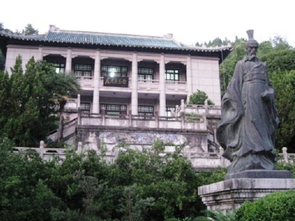
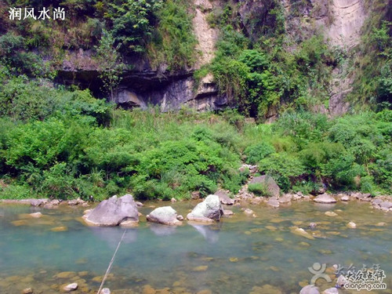
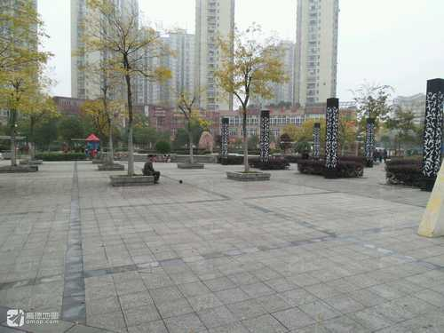
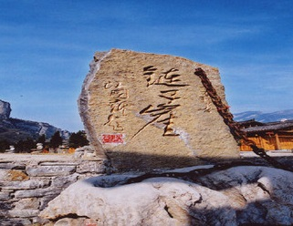
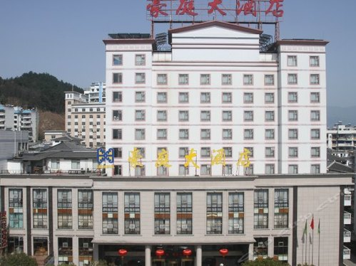

热门搜索：
望归亭
三峡链子崖景区
香溪河
首页
百科分类
词条分类
行政区域类
县级行政区
乡级行政区
非行政区域类
地片
区片
开发区
林区
矿区
...
群众自治组织类
居民委员会
村民委员会
居民点类
城镇居民点
农村居民点
交通运输设施类
桥梁
隧道
加油站
长途汽车站
主干路
锚地
河港
...
水利电力设施类
池塘
水库
灌溉渠
水力发电站
通信基站
输变电站
...
纪念地旅游景点类
人物纪念地
事件纪念地
公园
风景区
...
建筑物类
房屋
广场
亭
碑
塔
...
单位类
党政机关
事业单位
企业
军事单位
陆地水系类
河流
峡谷
河滩
...
陆地地形类
山
洞穴
天生桥
山峰
山口、关隘
山谷、谷地
山坡
...
推荐词条
更多>>

屈原故里文化旅游区

九畹溪

雏凤广场
小秋谷山
上和坪隧道
精彩词条
更多>>

三峡链子崖景区
地名来历 地名含义 历史沿革 地理实体描述 其它信息
阅读全文>>

秭归豪庭渡假大酒店有限公司
地名来历 地名含义 历史沿革 地理实体描述 其它信息
阅读全文>>
九畹溪
: 地名来历 地名含义 历史沿革 地理实体描述 其它信息
屈原故里文化旅游区
: 地名来历 地名含义 历史沿革 地理实体描述 其它信息
雏凤广场
: 地名来历 地名含义 历史沿革 地理实体描述 其它信息
牛岭村移民文体广场
: 地名来历 地名含义 历史沿革 地理实体描述 其它信息
香溪河
: 地名来历 地名含义 历史沿革 地理实体描述 其它信息
中心观村村民委员会
: 地名来历 地名含义 历史沿革 地理实体描述 其它信息
美座峡
: 地名来历 地名含义 历史沿革 地理实体描述 其它信息
世纪城
: 地名来历 地名含义 历史沿革 地理实体描述 其它信息
横墩岩隧道
: 地名来历 地名含义 历史沿革 地理实体描述 其它信息
百竹苑
: 地名来历 地名含义 历史沿革 地理实体描述 其它信息
热门词条
更多>>
望归亭
地名来历 地名含义 历史沿革...[
详细
]
良斗河
地名来历 地名含义 历史沿革...[
详细
]
三峡链子崖景区
地名来历 地名含义 历史沿革...[
详细
]
屈原故里文化旅游区
地名来历 地名含义 历史沿革...[
详细
]
最近更新
更多>>
坝头公园
09-16 16:57
谭家屋场
09-16 10:23
凉水井
09-16 09:39
徐长线
09-14 14:39
英雄长渠
09-14 14:31
屈原镇农贸市场
03-25 17:57
大水田坪
03-25 17:23
大河口桥
03-23 14:39
茅坪镇
07-23 14:39
梅坪基站
03-23 14:39
友情链接: